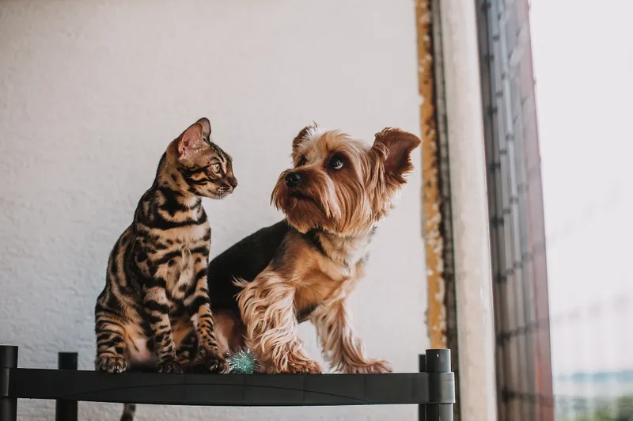

Listado de mascotas

Mascotas registradas
| Código | Nombre | Especie | Raza | Sexo | Nacimiento | Peso | Esterilizado | Propietario | Acciones |
|---|---|---|---|---|---|---|---|---|---|
| M-001 | Toby | Perro | Mestizo | Macho | 15/03/2021 | 12,5 kg | Sí | Carlos Andrade | |
| M-002 | Michi | Gato | Siamés | Hembra | 02/07/2022 | 4,2 kg | Sí | María López | |
| M-003 | Luna | Perro | Labrador | Hembra | 20/01/2020 | 28,0 kg | No | María López | |
| M-004 | Kiwi | Ave | Loro amazona | Macho | 10/05/2024 | 0,4 kg | No | Jorge Paredes |
Ejemplo: al buscar «Rex» no se encontraron mascotas. Intenta con otro criterio.